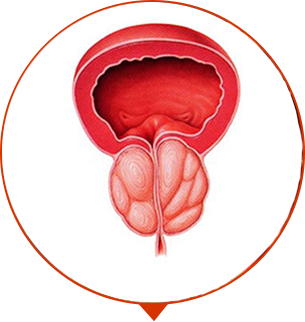

-

100% οργανικό
Με ασφάλεια! -

Αποτελεσματικότατα 98%
έχει αποδειχθεί από τους άνδρες! -

2765 άνδρες ήδη
έχουν γιατρευτεί
Η επανάσταση στη θεραπεία της χρόνιας προστατίτιδας
20 χιλιάδες άνδρες στην Ευρώπη ήδη έχουν ξεχάσει τον πόνο και τα προβλήματα ούρησης
-
ΒΗΜΑ 1
φεύγει ο πόνος, οξύς πόνος, αίσθημα καψίματος στη βουβωνική χώρα και στην μέση
-
ΒΗΜΑ 2
η ούρηση γίνεται σταθερή, όχι συχνή, εξαφανίζεται φλεγμονή
-
ΒΗΜΑ 3
γίνεται αποκατάσταση της στύσης, το σώμα δυναμώνει, η προστατίτιδα δεν επιστρέφει

ΔΟΚΙΜΑΣΕ ΤΟΝ ΕΑΥΤΟ ΣΟΥ! ΟΙ ΠΡΟΑΓΓΕΛΟΙ ΤΗΣ ΠΡΟΣΤΑΤΙΤΙΔΑΣ :
-

Μια φορά το χρόνο/εξάμηνο έχεις αισθανθεί ένα τράβηγμα στην περιοχή της βουβωνικής χώρας
-

Μερικές φορές αισθάνεσαι το τσούξιμο, η πίεση στο περίνεο
-

Έχετε παρατηρήσει ότι πας στην τουαλέτα πιο συχνά
-

Παρατηρείσαι, ότι ένα αβγουλάκι κρέμεται κάτω από το άλλο
-

Περιοδικά βασανίζεσαι από την δυσκοιλιότητα ή διάρροια
-

Παρατηρείς, ότι η στύση έγινε πιο αδύναμη
-

Έχει μειωθεί η σεξουαλική έλξη
-

Τουλάχιστον μια φορά έχεις αντιμετωπίσει την δυσκολία στην ούρηση
ΕΑΝ ΕΧΕΙΣ ΑΠΟΚΑΛΥΨΕΙ ΣΕ ΕΣΕΝΑ ΤΟΥΛΑΧΙΣΤΟΝ 1 ΣΥΜΠΤΩΜΑ, ΑΜΕΣΩΣ ΝΑ ΞΕΚΙΝΗΣΕΙΣ ΤΗΝ ΘΕΡΑΠΕΙΑ!
Σε βασανίζει ο πόνος. Η προστατίτιδα εμποδίζει να ζήσεις. Σε σένα μπορεί να γίνει χειρότερα τα επόμενα 1 - 2 χρόνια. Η υπογονιμότητα. Το αίμα κατά την εκσπερμάτιση και την ούρηση. Η στασιμότητα των ούρων στην κύστη (έως 500 ml). Τα κυστίδια.
-

ΑΝΙΚΑΝΟΤΗΤΑ
Μια ανίατη σεξουαλική ανικανότητα
-

ΑΔΕΝΩΜΑ ΤΟΥ ΠΡΟΣΤΑΤΗ
Η υπερανάπτυξη του ιστού του προστάτη, το σχηματισμό του όγκου και των κόμβων
-

ΟΓΚΟΛΟΓΙΑ
Κακοήθης όγκος, η πιο συχνή αιτία θανάτου των ανδρών
ΞΕΚΙΝΗΣΤΕ ΤΗΝ ΘΕΡΑΠΕΙΑ ΤΩΡΑΚΑΙ ΝΑ ΓΙΝΕΤΕ ΑΠΟΛΥΤΩΣ ΥΓΙΕΣ!
ΕΝΑ ΑΠΟΤΕΛΕΣΜΑΤΙΚΟ ΣΚΕΥΑΣΜΑ ΣΤΗΝ ΕΠΙΦΥΛΑΚΗ ΤΗΣ ΑΝΔΡΙΚΗΣ ΥΓΕΙΑΣ!
-

Χωρίς εξευτελιστικό μασάζ
-

Χωρίς ακριβά χάπια και ενέσεις
-
Χωρίς χειρουργικές εγχειρήσεις
-

Χωρίς τα ακριβά διαγνωστικά
-

Κλινικά αποδεδειγμένη αποτελεσματικότητα το 98% θεραπευμένων ασθενείς
-

Αναγνωρίζεται ως το πιο αποτελεσματικό σκεύασμα για τους άνδρες ηλικίας 40+
-

Έχει εγκριθεί από την Ευρωπαϊκή Ένωση Γιατρών
-

Υψηλή τεχνολογία και 100% οικολογικά συστατικά, χωρίς χημικά


-

Οι σπόροι κολοκύθας
Έχουν ευεργετική επίδραση στον προστάτη, λόγω της υψηλής περιεκτικότητάς τους σε λίπη και καροτενοειδή. Περιέχουν την πρωτεΐνη αργινίνη, η οποία βελτιώνει τα ορμονικά επίπεδα και αποτρέπει την ανάπτυξη όγκων του προστάτη.
-

Το εκχύλισμα φοίνικα sabal
Προάγει την υγεία του προστάτη και την αναπαραγωγική λειτουργία. Εξαλείφει τα δυσουρικά συμπτώματα (διαταραχή ούρησης, νυχτερινή πολυκιουρία, σύνδρομο πόνου κ.Λπ.)
-

Οι σπόροι λιναριού
Έχουν αντιφλεγμονώδη δράση, βοηθούν στην επιτάχυνση των διαδικασιών αναγέννησης.
-

Το ιβαν τσάι
Διατηρεί την υγεία του προστάτη, του κατώτερου ουροποιητικού συστήματος και επηρεάζει τη συνολική σωματική ευεξία.
-

Ο ψευδάργυρος
Εμποδίζει την ανάπτυξη φλεγμονωδών διεργασιών στον προστάτη, βελτιώνει την ποιότητα του σπέρματος, διατηρεί ένα ιδανικό επίπεδο τεστοστερόνης στο αίμα.
ΜΕΘΟΔΟΣ ΕΦΑΡΜΟΓΗΣ
- Χρήση: 1 κάψουλα 2 φορές την ημέρα με τα γεύματα.
- Μάθημα - 2 μήνες.
ΓΝΩΜΗ ΤΩΝ ΕΙΔΙΚΩΝ

Revitaprost διευκόλυνε την δουλειά στους δωρεάν γιατρούς. Βλέπω τους ασθενείς μου 2 φορές. Η πρώτη φορά, όταν έρχονται στη διαγνωστική και τη δεύτερη φορά, όταν σε ένα μήνα έρχονται να με πουν Σας ευχαριστώ, είμαι μια χαρά!. Και οι ιδιωτικές κλινικές δεν είναι τυχερές , με το Revitaprost θα είναι 10 φορές πιο δύσκολο να εκμεταλλευτούν τους απλούς ανθρώπους.
Λεωνίδας Σαχίνης
Ο υποψήφιος των Ιατρικών Επιστημών, Καθηγητής, γιατρός-ανδρολόγος, σεξολόγος.Αποφοίτησε από το Εθνικό Ιατρικό Πανεπιστήμιο Αθηνών Η εμπειρία της πρακτικής είναι στα 23 χρόνια

Η σύνθεση του Revitaprost λέει η ίδια για την εαυτό της. Είναι απολύτως ασφαλές σκεύασμα για άνδρες της παλιότερης γενιάς. Λόγω της μοναδικής του φόρμουλας και της συγκέντρωσης των δραστικών συστατικών, βιταμινών αφαιρείται τη φλεγμονή, επανέρχεται η στύση, η προστατίτιδα δεν επιστρέφεται. Το ανδρικό σώμα λειτουργεί σαν ελβετικό ρολόι.
Ιωάννης Καμπύλης
Κορυφαίος ανδρολόγος, ο γιατρός της ανώτερης κατηγορίας.Αποφοίτησε από το Ιατρικό Πανεπιστήμιο της ΚαλαμάταςΕμπειρία της πρακτικής είναι 19 χρόνια
ΚΛΙΝΙΚΑ ΑΠΟΔΕΔΕΙΓΜΕΝΗ ΑΠΟΤΕΛΕΣΜΑΤΙΚΟΤΗΤΑ
ΑΠΟΤΕΛΕΣΜΑ ΤΗΣ ΕΡΕΥΝΑΣ
ΦΑΡΜΑΚΕΥΤΙΚΟ ΣΚΕΥΑΣΜΑ ΑΠΟ ΤΗΝ ΠΡΟΣΤΑΤΙΤΙΔΑ
-
56%Μείωση του πόνου, των οξέων πόνων και του καψίματος
-
57%Κανονικοποίηση της ούρησης
-
28%Μείωση της ανάγκης ουρήθρας σε φυσιολογική
-
9%Αλλαγή μεγέθους του προστάτη μέχρι την κανονική
-
35%Καμία εκδήλωση της νόσου μετά τη διακοπή λήψης του σκευάσματος
Revitaprost
-
100%Μείωση του πόνου, των οξέων πόνων και του καψίματος
-
97%Κανονικοποίηση της ούρησης
-
98%Μείωση της ανάγκης ουρήθρας σε φυσιολογική
-
89%Αλλαγή μεγέθους του προστάτη μέχρι την κανονική
-
98%Καμία εκδήλωση της νόσου μετά τη διακοπή λήψης του σκευάσματος
ΠΛΕΟΝΕΚΤΗΜΑΤΑ ΤΟΥ Revitaprost
-

ΠΡΩΤΗ ΒΟΗΘΕΙΑ
Τα επώδυνα συμπτώματα περνούν μέσα σε πρώτη εβδομάδα
-
ΠΡΟΪΌΝ ΥΠΟΑΛΛΕΡΓΙΚΟ
Σε αντίθεση με τα αντιβιοτικά και τις αλοιφές για τους άνδρες
-

ΑΠΟΤΕΛΕΣΜΑΤΙΚΗ ΔΡΑΣΗ ΧΩΡΙΣ ΠΑΡΕΝΕΡΓΕΙΕΣ
Η υψηλές τεχνολογίες επιτρέπουν να λαμβάνουμε ένα κρυστάλλινο καθαρό συμπύκνωμα φαρμακευτικών φυτών, χωρίς προσμίξεις
-

ΟΛΟΚΛΗΡΩΜΕΝΗ ΦΡΟΝΤΙΔΑ
Έντονη επίδραση σε ιστούς του προστάτη, επανορθωτική δράση. Η περισσότερη δύναμη, την ενέργεια, το επανορθωτικό λίμπιντο, η εξαιρετική δραστικότητα
ΠΡΟΣΟΧΗ ΣΤΙΣ ΑΠΟΜΙΜΗΣΕΙΣ
Με την αύξηση δημοτικότητας του Revitaprost, αυξήθηκαν οι περιπτώσεις απομιμήσεων σε τιμές ευκαιρίας. Μόνο εδώ μπορείτε να αγοράσετε το αυθεντικό προϊόν με έκπτωση 50%.
-
Κάντε άμεση παραγγελία σας και αποκτήστε την 50% έκπτωση
-

Περιμένετε την κλήση χειριστή για την διευκρίνηση των λεπτομερειών
-

Χωρίς κίνδυνο! Αποκτήστε το δέμα και πληρώστε στο ταχυδρομείο
ΔΕΧΟΜΑΣΤΕ ΠΑΡΑΓΓΕΛΙΕΣ ΣΕ ΟΛΗ ΤΗΝ ΕΥΡΩΠΗ
-
100% οργανικό
Με ασφάλεια! -
Αποτελεσματικότατα 98%
έχει αποδειχθεί από τους άνδρες! -
2765 άνδρες ήδη
έχουν γιατρευτεί
Η επανάσταση στη θεραπεία της χρόνιας προστατίτιδας
20 χιλιάδες άνδρες στην Ευρώπη ήδη έχουν ξεχάσει τον πόνο και τα προβλήματα ούρησης
-
ΒΗΜΑ 1
φεύγει ο πόνος, οξύς πόνος, αίσθημα καψίματος στη βουβωνική χώρα και στην μέση
-
ΒΗΜΑ 2
η ούρηση γίνεται σταθερή, όχι συχνή, εξαφανίζεται φλεγμονή
-
ΒΗΜΑ 3
γίνεται αποκατάσταση της στύσης, το σώμα δυναμώνει, η προστατίτιδα δεν επιστρέφει
ΣΧΟΛΙΑ ΑΝΔΡΩΝ, ΟΙ ΟΠΟΙΟΙ ΝΙΚΗΣΑΝ ΤΗΝ ΠΡΟΣΤΑΤΙΤΙΔΑ
Ήρθα στο γιατρικό ραντεβού με αηδία. Νόμιζα, ότι το μασάζ του προστάτη θα με κάνουν. Ο γιατρός μου είπε να μην ανησυχώ, αν κάνουμε την θεραπεία τώρα. Μου έγραψε το Revitaprost. Μετά από 3 μήνες νιώθω υπέροχα !
И.А, Αθήνα
Είχα μεγάλους πόνους και έτσι για το σεξ με την νεαρή σύζυγο μου καν δεν μπορούσα να σκεφτώ. Είχα υποφέρει. Μου έφερε. Αυτή μου έφερε Revitaprost. Μετά από ένα μήνα εμένα δεν γνώρισε. Είμαι δυνατός σαν τον ταύρο. Δεν έχω πόνους, στην τουαλέτα πάω σαν κανονικός άνθρωπος. Το σεξ ήταν καλύτερο.
Ν****α, Καρδίιτσα
Είχα θάμπους πόνους στη βουβωνική χώρα και στο όσχεο. Η αύξηση, η φλεγμονή. Η διάγνωση ήταν η προστατίτιδα. Προετοιμαζόμουνα για τη χειρουργική εγχείρηση. Αλλά ενώ ήμουν σε ένα επαγγελματικό ταξίδι στη Αθήνα, πήγα στο Εθνικό Ιατρικό Πανεπιστήμιο. Μου έκαναν εξετάσεις. Έγραψαν το Revitaprost. Σε ένα μήνα, όπως με ένα χέρι έδιωξε όλους τους πόνους. Όλα είναι μια χαρά, δεν πονάει, δεν τσιμπάει πουθενά.
****, Θεσσαλονίκη
Παραγγείλετε, ενώ η τιμή δεν έχει αυξηθεί ακόμα